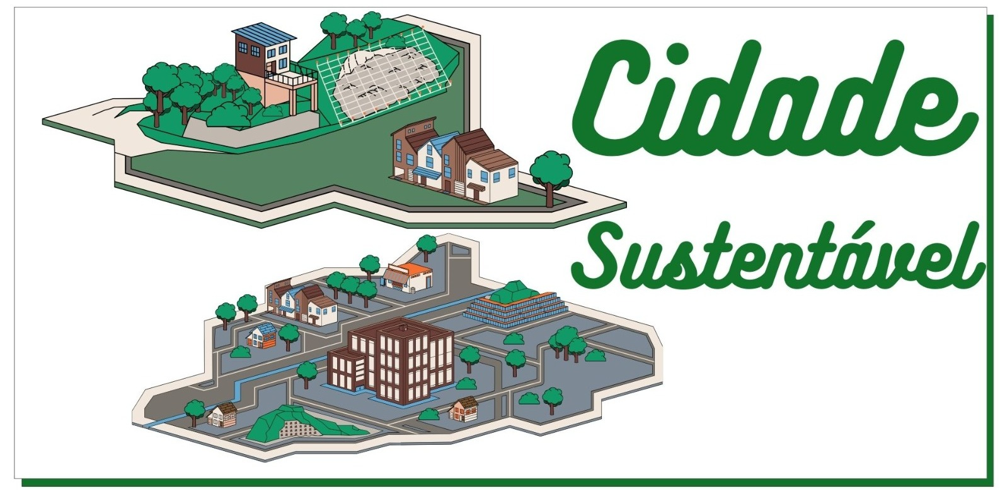

Conceito

Cidade Sustentável é um conceito que prevê uma série de diretrizes para melhorar a gestão de uma zona urbana e prepará-la para as gerações futuras.
Para ser sustentável, a administração da cidade deve considerar três pilares:responsabilidade ambiental, economia sustentável e vitalidade cultural. O principal objetivo da cidade sustentável é evitar o esgotamento do meio ambiente e garantir sua permanência para gerações futuras. Por isso, as políticas públicas devem pensar sempre no futuro.
Como a maior parte da população mundial vive em zonas urbanas, as cidades se tornaram o epicentro de problemas como a poluição e o desperdício de recursos naturais. Por esta razão, são os centros urbanos que devem se reinventar a fim de que o futuro das próximas gerações esteja garantido e seja melhor do que o mundo em que vivemos hoje.
Uma cidade para ser considerada sustentável deve:
- Destinar corretamente e reaproveitar resíduos sólidos;
- Oferecer água de qualidade sem esgotar mananciais;
- Reaproveitar a água da chuva;
- Criar e utilizar de fontes de energia renováveis;
- Ofertar transporte alternativo e de qualidade para a população;
- Garantir opções de cultura e lazer.
Hoje, segundo pesquisadores,economistas e gestores, não há nenhuma cidade no mundo que seja totalmente sustentável. No entanto, vejamos como as cidades podem tornar estas ideias em realidade.
Coleta de Lixo
Para acabar com um dos maiores problemas das cidades, o lixo, a melhor solução é a reciclagem. Contudo, para isso é preciso que a população aprenda a separar corretamente os resíduos em locais destinados a este fim. Assim, fica mais fácil reaproveitar o material que já não se usa mais.
Por sua parte, os governos devem criar leis que incentivem a coleta seletiva e acabar com os aterros sanitários.
- Coleta Seletiva
- Aterro Sanitário
Água
Uma cidade sustentável aproveita ao máximo as águas pluviais e a destina para a limpeza urbana e a indústria. Para captar a água da chuva, as edificações podem instalar calhas que viabilizem a recolha da água e a instituição de “telhados verdes”. Estes são jardins planejados que são cultivados nos tetos dos edifícios e casas que ajudam a absorver o líquido.
Assim, o telhado verde é um jardim que refresca a zona urbana, absorve os gases poluentes e ainda embeleza o ambiente tornado-o menos hostil.
Transporte Público
A mobilidade urbana prevê a oferta de transporte coletivo eficiente e que também seja movido por energia não poluente.
Da mesma forma, uma cidade sustentável cria meios que permitem a movimentação de veículos de propulsão humana como bicicletas e patinetes.
Aos cidadãos cabe trocar o automóvel pela bicicleta e criar o sistema de carona. De igual maneira, os governos precisam construir ciclovias, conscientizar os motoristas sobre a importância dos ciclistas e ainda substituir os carros movidos a combustível fósseis por elétricos.
Educação e Lazer
Uma cidade sustentável preza pela qualidade de vida dos seus habitantes. Para isso, é essencial que estes sejam escolarizados e que a oferta de lazer tenha qualidade e variedade.
Por isso, é importante aumentar a área verde da cidade através da construção de parques e praças, promover políticas de incentivos culturais e valorizar os artistas locais.
Exemplos de Cidades Sustentáveis
Segundo um estudo realizado pela consultora holandesa Arcadis, em 2017, estas são as dez cidades do mundo que mais cumprem quesitos para serem consideradas cidades sustentáveis:
- Zurique, Suíça
- Singapura
- Estocolmo, Suécia
- Viena, Áustria
- Londres, Inglaterra
- Frankfurt, Alemanha
- Seul, Coreia do Sul
- Hamburgo, Alemanha
- Praga, República Checa
- Munique,Alemanha
Cidades Sustentáveis no Brasil
No Brasil, o município de Curitiba, capital do Paraná é o exemplo que mais se aproxima do conceito de cidade sustentável. O plano diretor de Curitiba, que faz dela hoje uma cidade sustentável, começou ser aplicado em 1970. Focado no transporte, gestão de resíduos e qualidade de vida, a cidade transformou seu design urbano para torná-lo adequado ao crescimento populacional.
Veja a lista de cidades sustentáveis no Brasil:
- Curitiba/PR
- Londrina/PR
- João Pessoa/PB
- Paragominas/MG
- Santana do Parnaíba/SP
- Extrema/MG
By. Luisa Ps.